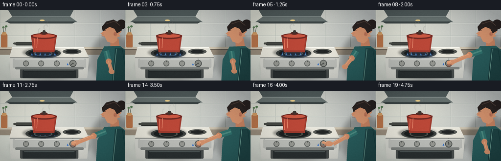
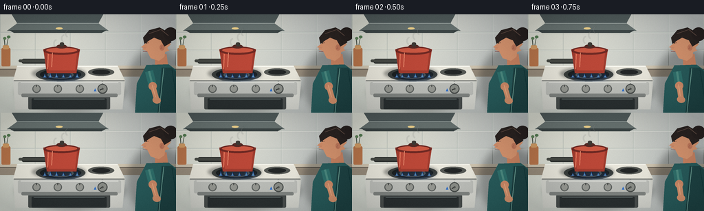

CODING AGENTS AS PIXEL WORLD MODELS
traex/GPT-5.6-Sol · motion_rationality_0052
点击播放 · 原生 RGB 像素
逐轮保存的候选
回放视频、检查图与代码变化。
每份候选均可单独播放。实际图片检查记录在下方工具轨迹中。
候选 01播放与检查图
点击播放 · 原生 RGB 像素


展开代码变化
--- 上一保存版本
+++ 本次保存版本
@@ -0,0 +1,336 @@
+from pathlib import Path
+import math
+
+import numpy as np
+from PIL import Image, ImageDraw, ImageFilter, ImageFont
+
+import artifact_io
+
+
+W, H, N = 256, 144, 20
+S = 4
+CASE_DIR = Path(__file__).resolve().parent
+
+
+def smoothstep(x):
+ x = max(0.0, min(1.0, x))
+ return x * x * (3.0 - 2.0 * x)
+
+
+def lerp(a, b, t):
+ return a + (b - a) * t
+
+
+def sc(v):
+ return int(round(v * S))
+
+
+def box(coords):
+ return tuple(sc(v) for v in coords)
+
+
+def pts(points):
+ return [(sc(x), sc(y)) for x, y in points]
+
+
+def line(draw, xy, fill, width, joint="curve"):
+ draw.line(pts(xy), fill=fill, width=sc(width), joint=joint)
+
+
+def ellipse(draw, xy, fill, outline=None, width=1):
+ draw.ellipse(box(xy), fill=fill, outline=outline, width=sc(width))
+
+
+def rounded(draw, xy, radius, fill, outline=None, width=1):
+ draw.rounded_rectangle(box(xy), radius=sc(radius), fill=fill,
+ outline=outline, width=sc(width))
+
+
+def polygon(draw, xy, fill):
+ draw.polygon(pts(xy), fill=fill)
+
+
+def text(draw, xy, value, fill, size=5, anchor=None):
+ font = ImageFont.load_default(size=sc(size) / 2.5)
+ draw.text((sc(xy[0]), sc(xy[1])), value, fill=fill, font=font, anchor=anchor)
+
+
+def gradient_background():
+ """A warm tiled kitchen wall with a cool shaded edge."""
+ yy, xx = np.mgrid[0:H*S, 0:W*S]
+ nx, ny = xx / (W*S), yy / (H*S)
+ light = np.exp(-((nx - .30) ** 2 / .20 + (ny - .14) ** 2 / .35))
+ base = np.zeros((H*S, W*S, 3), dtype=np.float32)
+ base[..., 0] = 206 + 22 * light - 25 * nx
+ base[..., 1] = 211 + 18 * light - 25 * nx
+ base[..., 2] = 203 + 13 * light - 17 * nx
+ return Image.fromarray(np.uint8(np.clip(base, 0, 255)), "RGB").convert("RGBA")
+
+
+def soft_shadow(im, xy, radius=5, opacity=80):
+ layer = Image.new("RGBA", im.size, (0, 0, 0, 0))
+ d = ImageDraw.Draw(layer)
+ d.ellipse(box(xy), fill=(19, 22, 22, opacity))
+ layer = layer.filter(ImageFilter.GaussianBlur(sc(radius)))
+ im.alpha_composite(layer)
+
+
+def draw_room(im, d):
+ # Fine grout lines and backsplash.
+ for x in (0, 51, 102, 153, 204, 255):
+ line(d, [(x, 0), (x, 78)], (168, 177, 171, 95), .55)
+ line(d, [(x + .7, 0), (x + .7, 78)], (238, 239, 230, 85), .35)
+ for y in (26, 52, 78):
+ line(d, [(0, y), (256, y)], (166, 176, 170, 100), .55)
+ line(d, [(0, y + .7), (256, y + .7)], (240, 241, 233, 95), .4)
+
+ # Range hood and its warm work light.
+ polygon(d, [(17, 0), (150, 0), (143, 13), (25, 13)], (80, 91, 91, 255))
+ polygon(d, [(25, 13), (143, 13), (158, 24), (10, 24)], (105, 116, 114, 255))
+ polygon(d, [(13, 23), (155, 23), (148, 27), (20, 27)], (61, 70, 70, 255))
+ line(d, [(25, 13), (143, 13)], (180, 190, 186, 220), .7)
+ ellipse(d, (81, 19, 91, 22), (245, 214, 142, 220))
+
+ # Counter edge behind the stove.
+ rounded(d, (-8, 75, 263, 91), 2, (151, 140, 124, 255))
+ rounded(d, (-8, 75, 263, 80), 2, (205, 195, 175, 255))
+ line(d, [(0, 80), (256, 80)], (96, 88, 79, 160), 1)
+
+ # A few quiet kitchen props, kept in the background.
+ rounded(d, (2, 49, 15, 76), 2, (184, 117, 75, 255))
+ rounded(d, (4, 45, 13, 51), 2, (209, 156, 101, 255))
+ line(d, [(7, 45), (6, 35)], (73, 82, 72, 255), 1.2)
+ line(d, [(10, 45), (12, 34)], (84, 91, 78, 255), 1.0)
+ ellipse(d, (4.5, 33, 9, 37), (95, 130, 89, 255))
+ ellipse(d, (10, 31, 15, 35), (84, 123, 82, 255))
+
+
+def draw_flames(im, amount, frame):
+ if amount <= .015:
+ return
+ glow = Image.new("RGBA", im.size, (0, 0, 0, 0))
+ gd = ImageDraw.Draw(glow)
+ pulse = .93 + .07 * math.sin(frame * 1.7)
+ # Soft blue reflected glow under the saucepan.
+ ellipse(gd, (59, 81, 121, 100), (52, 130, 255, int(47 * amount)))
+ glow = glow.filter(ImageFilter.GaussianBlur(sc(4)))
+ im.alpha_composite(glow)
+ d = ImageDraw.Draw(im)
+ centers = [65, 73, 82, 92, 102, 112]
+ for j, x in enumerate(centers):
+ wobble = math.sin(frame * 1.55 + j * 1.31)
+ height = (4.7 + 2.1 * (0.5 + 0.5*wobble)) * amount * pulse
+ half = 2.6 * (0.45 + .55 * amount)
+ y0 = 92.2
+ polygon(d, [(x-half, y0), (x-.85, y0-height*.40), (x, y0-height),
+ (x+.9, y0-height*.42), (x+half, y0)],
+ (55, 128, 255, int(235*amount)))
+ if amount > .25:
+ polygon(d, [(x-1.1, y0-.2), (x, y0-height*.63), (x+1.1, y0-.2)],
+ (162, 229, 255, int(235*amount)))
+
+
+def draw_stove_and_pot(im, flame_amount, frame, knob_angle):
+ d = ImageDraw.Draw(im)
+ soft_shadow(im, (23, 87, 182, 141), 4, 85)
+
+ # Stove enamel top and front, in perspective.
+ polygon(d, [(25, 75), (171, 75), (182, 97), (19, 97)], (231, 229, 218, 255))
+ polygon(d, [(19, 97), (182, 97), (178, 139), (22, 139)], (213, 214, 207, 255))
+ line(d, [(20, 97), (181, 97)], (118, 121, 118, 255), 1.4)
+ line(d, [(25, 76), (171, 76)], (255, 255, 248, 220), 1)
+
+ # Cooktop burners.
+ ellipse(d, (52, 78, 124, 98), (77, 82, 79, 255))
+ ellipse(d, (58, 80, 118, 96), (32, 36, 36, 255))
+ ellipse(d, (69, 83, 107, 94), (113, 116, 106, 255))
+ ellipse(d, (72, 84, 104, 93), (41, 44, 43, 255))
+ # rear burner, just enough to read as a stovetop
+ ellipse(d, (128, 79, 166, 90), (85, 88, 84, 255))
+ ellipse(d, (134, 81, 160, 88), (35, 38, 38, 255))
+
+ # Flames are behind the pot but in front of burner.
+ draw_flames(im, flame_amount, frame)
+ d = ImageDraw.Draw(im)
+
+ # Saucepan handle, pot shadow, and rounded red saucepan.
+ soft_shadow(im, (46, 77, 125, 96), 2, 90)
+ d = ImageDraw.Draw(im)
+ rounded(d, (31, 65, 69, 72), 3.5, (44, 47, 45, 255))
+ rounded(d, (27, 66, 67, 70), 2, (70, 73, 68, 255))
+ polygon(d, [(63, 51), (116, 51), (111, 86), (68, 86)], (159, 60, 47, 255))
+ polygon(d, [(68, 55), (112, 55), (109, 82), (71, 82)], (187, 72, 56, 255))
+ line(d, [(70, 58), (69, 80)], (228, 117, 90, 170), 1.4)
+ ellipse(d, (63, 47, 116, 59), (113, 42, 36, 255))
+ ellipse(d, (67, 49, 112, 56), (204, 89, 67, 255))
+ ellipse(d, (82, 44, 97, 50), (84, 42, 37, 255))
+ rounded(d, (87, 41, 93, 47), 2, (61, 57, 52, 255))
+ # A narrow shine gives the enamel material definition.
+ line(d, [(76, 56), (75, 77)], (242, 150, 119, 155), 1.0)
+
+ # Front control strip and oven door.
+ rounded(d, (26, 99, 176, 118), 2.5, (188, 190, 185, 255))
+ line(d, [(30, 100), (172, 100)], (244, 245, 238, 220), .7)
+ rounded(d, (41, 120, 160, 139), 2, (74, 79, 78, 255))
+ rounded(d, (46, 123, 155, 139), 1.5, (42, 48, 49, 255))
+ line(d, [(49, 124), (152, 124)], (108, 119, 117, 130), .7)
+ rounded(d, (31, 116, 171, 121), 2, (128, 132, 129, 255))
+
+ # Two secondary controls.
+ for cx in (53, 84, 116):
+ ellipse(d, (cx-6, 103, cx+6, 115), (95, 99, 96, 255))
+ ellipse(d, (cx-4.6, 104, cx+4.6, 113.5), (151, 153, 147, 255))
+ line(d, [(cx, 106), (cx, 103.3)], (48, 51, 50, 255), 1)
+
+ # The active control: icon and clear OFF detent at twelve o'clock.
+ cx, cy = 149.0, 109.0
+ text(d, (149, 98.2), "OFF", (52, 57, 56, 255), 3.4, "mm")
+ line(d, [(149, 101), (149, 103)], (61, 65, 63, 255), .8)
+ # tiny blue flame symbol at the initial/ON detent
+ polygon(d, [(136.5, 112.5), (138.2, 108.2), (140, 112.5)], (52, 112, 199, 255))
+ ellipse(d, (cx-7.3, cy-7.3, cx+7.3, cy+7.3), (74, 78, 76, 255))
+ ellipse(d, (cx-5.7, cy-5.9, cx+5.7, cy+5.6), (138, 141, 135, 255))
+ # pointer rotates from the lower-left ON mark to straight up OFF.
+ dx, dy = math.cos(knob_angle) * 4.5, math.sin(knob_angle) * 4.5
+ line(d, [(cx, cy), (cx+dx, cy+dy)], (31, 34, 34, 255), 1.35)
+ ellipse(d, (cx-1.4, cy-1.4, cx+1.4, cy+1.4), (84, 87, 84, 255))
+
+
+def draw_steam(im, frame, flame_amount):
+ # Residual steam drifts naturally and continues briefly after shutoff.
+ layer = Image.new("RGBA", im.size, (0, 0, 0, 0))
+ d = ImageDraw.Draw(layer)
+ fade = .55 + .45 * flame_amount
+ for k in range(3):
+ phase = (frame * .72 + k * 3.1) % 10
+ y = 42 - phase * 2.35
+ x = 81 + k * 9 + math.sin(frame*.35 + k*2) * 2.2 + phase*.12
+ arcbox = box((x-3, y-5, x+5, y+6))
+ d.arc(arcbox, start=110, end=265, fill=(239, 244, 238, int(95*fade)), width=sc(1.1))
+ layer = layer.filter(ImageFilter.GaussianBlur(sc(.45)))
+ im.alpha_composite(layer)
+
+
+def rotated_ellipse_layer(center, radii, angle, color):
+ pad = max(radii) + 4
+ layer = Image.new("RGBA", (sc(pad*2), sc(pad*2)), (0, 0, 0, 0))
+ ld = ImageDraw.Draw(layer)
+ ld.ellipse((sc(pad-radii[0]), sc(pad-radii[1]), sc(pad+radii[0]), sc(pad+radii[1])), fill=color)
+ layer = layer.rotate(-math.degrees(angle), Image.Resampling.BICUBIC, expand=True)
+ return layer, (sc(center[0]) - layer.width//2, sc(center[1]) - layer.height//2)
+
+
+def draw_person(im, frame, reach, turn, retract):
+ d = ImageDraw.Draw(im)
+ # Small breathing and a slight attentive head dip while turning.
+ breathe = math.sin(frame * .55) * .45
+ dip = math.sin(math.pi * turn) * 1.0
+
+ # Person silhouette/body, cropped naturally at the right edge.
+ soft_shadow(im, (185, 49, 270, 151), 5, 75)
+ d = ImageDraw.Draw(im)
+ # Neck, ear and face in profile looking left toward the control.
+ polygon(d, [(225, 58+dip), (242, 58+dip), (245, 79), (226, 83)], (198, 129, 96, 255))
+ # Torso and apron/shirt.
+ polygon(d, [(213, 74+breathe), (245, 73+breathe), (270, 92), (270, 150), (196, 150), (199, 101)], (40, 91, 91, 255))
+ polygon(d, [(235, 78), (250, 78), (266, 94), (270, 146), (229, 146)], (30, 67, 68, 255))
+ line(d, [(238, 79), (231, 144)], (112, 162, 150, 150), 1.0)
+ line(d, [(250, 81), (260, 145)], (19, 54, 56, 150), 1.0)
+
+ # Head: profile has forehead, nose, lips, and chin facing the stove.
+ face = [(212, 31+dip), (229, 26+dip), (244, 32+dip), (248, 44+dip),
+ (243, 49+dip), (246, 53+dip), (240, 55+dip), (239, 62+dip),
+ (231, 68+dip), (219, 64+dip), (214, 54+dip), (207, 51+dip),
+ (211, 46+dip)]
+ polygon(d, face, (213, 147, 110, 255))
+ # Nose points left and reads clearly in profile.
+ polygon(d, [(212, 42+dip), (205, 48+dip), (213, 49+dip)], (211, 143, 106, 255))
+ line(d, [(206.5, 48.5+dip), (211.5, 49+dip)], (154, 91, 72, 190), .55)
+ line(d, [(208, 54+dip), (214, 54.5+dip)], (133, 65, 61, 220), .65)
+ # Eye fixed on the knob.
+ line(d, [(211.7, 42.0+dip), (216.3, 41.5+dip)], (75, 49, 43, 255), .65)
+ ellipse(d, (212.1, 41.1+dip, 213.5, 42.6+dip), (39, 39, 35, 255))
+ # Ear.
+ ellipse(d, (232, 44+dip, 239, 53+dip), (192, 121, 92, 255))
+ line(d, [(235, 47+dip), (233.5, 50+dip), (236, 50.5+dip)], (135, 76, 65, 190), .6)
+ # Hair cap and bun, with highlights.
+ polygon(d, [(210, 43+dip), (208, 34+dip), (217, 23+dip), (232, 19+dip),
+ (246, 27+dip), (249, 41+dip), (239, 47+dip), (234, 38+dip),
+ (224, 34+dip), (217, 38+dip)], (42, 35, 33, 255))
+ ellipse(d, (238, 19+dip, 258, 39+dip), (38, 32, 31, 255))
+ line(d, [(217, 28+dip), (234, 22+dip), (245, 31+dip)], (92, 72, 64, 130), 1)
+
+ # Arm kinematics: shoulder -> elbow -> wrist, with a smooth reach/withdrawal.
+ active = reach * (1.0 - retract)
+ # During retraction this blends back to a relaxed arm beside the torso.
+ sh = (216.5, 83.0 + breathe)
+ elbow_rest = (222.0, 105.0 + breathe)
+ wrist_rest = (228.0, 126.0 + breathe)
+ elbow_reach = (191.5, 91.5 + 1.5*math.sin(turn*math.pi))
+ wrist_reach = (158.0, 106.0)
+ ex, ey = lerp(elbow_rest[0], elbow_reach[0], active), lerp(elbow_rest[1], elbow_reach[1], active)
+ wx, wy = lerp(wrist_rest[0], wrist_reach[0], active), lerp(wrist_rest[1], wrist_reach[1], active)
+
+ # Short sleeve above the skin forearm.
+ line(d, [sh, (ex, ey)], (47, 111, 107, 255), 12)
+ line(d, [sh, (ex, ey)], (75, 137, 127, 255), 3.0)
+ ellipse(d, (ex-6, ey-6, ex+6, ey+6), (204, 137, 103, 255))
+ line(d, [(ex, ey), (wx, wy)], (211, 145, 108, 255), 8.0)
+ line(d, [(ex-1, ey-2), (wx-1, wy-2)], (234, 172, 132, 150), 1.1)
+
+ # Hand aligns with the forearm while reaching; fingers close around the knob.
+ angle = math.atan2(109-wy, 149-wx)
+ if active > .82:
+ # Palm crosses the knob face, thumb on top and three curved gripping fingers.
+ hand, pos = rotated_ellipse_layer(((wx+151)/2, (wy+108.5)/2), (8.7, 5.2), angle,
+ (213, 146, 109, 255))
+ im.alpha_composite(hand, pos)
+ d = ImageDraw.Draw(im)
+ ellipse(d, (145.5, 103.4, 152.8, 108.5), (224, 158, 118, 255))
+ # Three finger arcs wrapping the lower edge of the control.
+ for j in range(3):
+ y = 108.0 + j*1.7
+ d.arc(box((144.5-j*.25, y-1.0, 154.8, y+4.0)), 2, 164,
+ fill=(132, 79, 64, 255), width=sc(.65))
+ line(d, [(151, 104), (154.5, 106.7)], (245, 184, 141, 190), .7)
+ else:
+ hand, pos = rotated_ellipse_layer((wx, wy), (6.0, 4.7), angle,
+ (213, 146, 109, 255))
+ im.alpha_composite(hand, pos)
+
+
+def render_frame(i):
+ # Timing: establish, reach, twist OFF, pause, withdraw.
+ reach = smoothstep((i - 2) / 6.0)
+ turn = smoothstep((i - 8) / 5.0)
+ retract = smoothstep((i - 15) / 4.0)
+ flame_amount = 1.0 - turn
+ knob_angle = lerp(math.radians(155), math.radians(-90), turn)
+
+ im = gradient_background()
+ d = ImageDraw.Draw(im)
+ draw_room(im, d)
+ draw_stove_and_pot(im, flame_amount, i, knob_angle)
+ draw_steam(im, i, flame_amount)
+ draw_person(im, i, reach, turn, retract)
+
+ # Soft cinematic vignette and stable fine-grain texture.
+ rgb = im.convert("RGB").resize((W, H), Image.Resampling.LANCZOS)
+ arr = np.asarray(rgb).astype(np.float32)
+ yy, xx = np.mgrid[0:H, 0:W]
+ vignette = 1.0 - 0.11 * (((xx-W/2)/(W/2))**2 + ((yy-H/2)/(H/2))**2)
+ arr *= np.clip(vignette[..., None], .82, 1.0)
+ rng = np.random.default_rng(520) # stable grain prevents distracting shimmer
+ grain = rng.normal(0, 0.72, (H, W, 1))
+ arr += grain
+ return np.uint8(np.clip(arr, 0, 255))
+
+
+def main():
+ frames = np.stack([render_frame(i) for i in range(N)], axis=0)
+ artifact_io.save(frames, CASE_DIR)
+ print(f"saved {frames.shape} RGB frames to {CASE_DIR}")
+
+
+if __name__ == "__main__":
+ main()
可观测工具轨迹
实际执行的命令与返回图片。
命令 1exit 0
/bin/bash -lc "cat prompt.txt && printf '\\n--- GENERATION_RULES.md ---\\n' && cat GENERATION_RULES.md"
命令 2exit 0
/bin/bash -lc "cat task_spec.json && printf '\\n--- FILES ---\\n' && find . -maxdepth 2 -type f -printf '%p\\n' | sort"
命令 3exit 0
/bin/bash -lc "command -v ffmpeg; command -v blender; command -v python3; python3 - <<'PY' mods=['cv2','numpy','PIL','imageio','moviepy','torch'] for m in mods: try: x=__import__(m); print(m,'OK',getattr(x,'__version__','')) except Exception as e: print(m,'NO',type(e).__name__) PY"
命令 4exit 0
/bin/bash -lc 'cat artifact_io.py'
命令 5exit 0
/bin/bash -lc "python3 generate.py && python3 - <<'PY'
from pathlib import Path
import numpy as np
from PIL import Image
p=Path('.')
z=np.load('pixels.npz')['pixels']
print('pixels',z.shape,z.dtype,'frames',len(list((p/'frames').glob('*.png'))))
for i in [0,4,8,10,12,15,19]:
a=np.asarray(Image.open(f'frames/{i:02}.png'))
print(i,a.shape,a.dtype,a.mean().round(2),a.min(),a.max())
PY"命令 6exit 0
/bin/bash -lc "python3 -m py_compile generate.py && find frames -maxdepth 1 -name '*.png' | sort | wc -l && ls -lh generate.py pixels.npz inspection.png transition_check.png index.html frames/00.png frames/19.png && python3 - <<'PY'
import json, numpy as np
from PIL import Image
s=json.load(open('task_spec.json'))
a=np.stack([np.asarray(Image.open(f'frames/{i:02d}.png').convert('RGB')) for i in range(20)])
assert a.shape==(s['frames'],s['height'],s['width'],3)
assert a.dtype==np.uint8
# Quantify real temporal change and lit-vs-off blue energy around the front burner.
d=np.mean(np.abs(np.diff(a.astype(np.int16),axis=0)),axis=(1,2,3))
blue=(a[:,78:99,52:124,2].astype(float)-a[:,78:99,52:124,0].astype(float)).mean(axis=(1,2))
print('validated',a.shape,a.dtype)
print('mean frame deltas',np.round(d,2).tolist())
print('burner blue signal: start %.2f, end %.2f'%(blue[:4].mean(),blue[-4:].mean()))
PY"视觉工具实际返回图片 1

保存候选 1 份；完成命令 6 次；可验证图片返回 1 张。原始 API 响应与完整日志保留在本地。